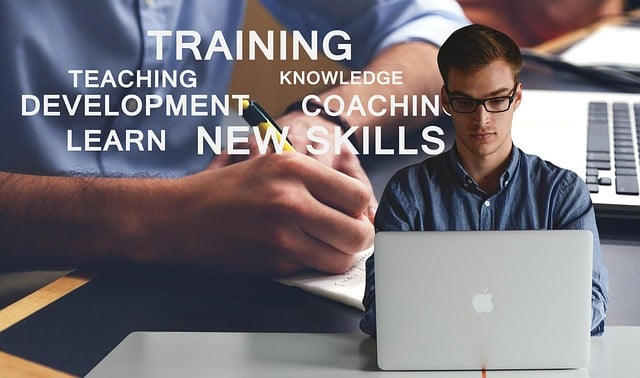

Welcome to Ubuntu Youth Skills Development(UYSD)
Ubuntu Youth Skills Development (UYSD) is an non-profit organization (NPO) established to empower young people between the ages of 18 and 30. The organization focuses on digital literacy training, entrepreneurship development, and career mentorship. It operates within underserved communities and partners with local business and volunteers to deliver practical training programs.
